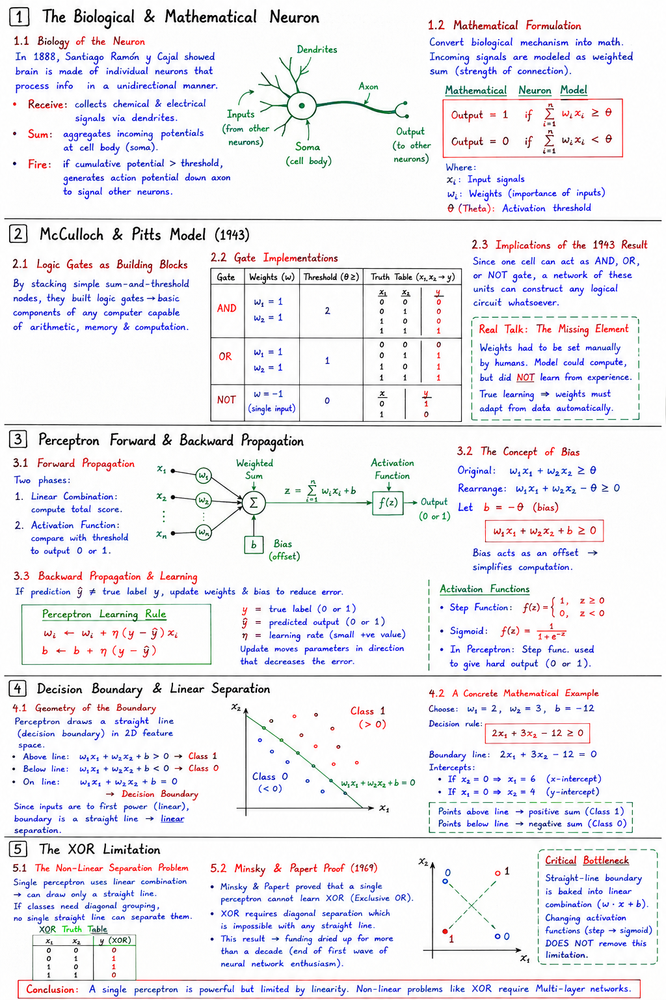

Short Notes & Visual Summary
Handwritten / quick summary notes for Lecture 01:

Click image to open high-resolution version in new tab
The Biological & Mathematical Neuron
1.1 Biology of the Neuron
In 1888, the father of modern neuroscience, Santiago Ramón y Cajal, showed that the brain is constructed from individual, separate cells called neurons. These biological units process information in a unidirectional manner.
A biological neuron operates on a simple principle:
- Receive: It collects chemical and electrical signals from neighboring cells through its dendrites.
- Sum: It aggregates these incoming potentials at the cell body (soma).
- Fire: If the cumulative potential surpasses a specific threshold, it generates an action potential that travels down the axon to signal other neurons.
1.2 Mathematical Formulation
To implement reasoning in machinery, we must convert this biological mechanism into mathematical equations. We model the incoming signals as a weighted sum, where each input has an associated weight representing its connection strength.
A neuron will fire (output 1) if the weighted sum of inputs meets or exceeds a threshold value:
Output = 1 if ∑ wixi ≥ θ
Where:
- xi: Input signals.
- wi: Weights that scale the relative importance of each input.
- θ (Theta): The activation threshold.
McCulloch & Pitts Model (1943)
2.1 Logic Gates as Building Blocks
In 1943, Warren McCulloch and Walter Pitts formulated the sum-and-threshold model into exact mathematics. They realized that by stacking these simple mathematical nodes, they could build logic gates—the essential components of any Modern Computer Architecture capable of arithmetic, memory, and general computation.
2.2 Gate Implementations (AND, OR, NOT)
By manually tuning weights and thresholds, a single mathematical neuron can act as standard logical operators:
- AND Gate: Output fires only when both inputs are active.
- Weights: w1 = 1, w2 = 1
- Threshold: θ ≥ 2
- OR Gate: Output fires when at least one input is active.
- Weights: w1 = 1, w2 = 1
- Threshold: θ ≥ 1
- NOT Gate: Reverses a single input signal.
- Weight: w = -1
- Threshold: θ ≥ 0
2.3 Implications of the 1943 Result
Since one cell can be configured to act as an AND, OR, or NOT gate, a network of these basic units can theoretically construct any logical circuit whatsoever. This was a critical step in establishing the mathematical foundation of neural computation.
In the McCulloch-Pitts model, the weights had to be set manually by human engineering. The model could compute, but it did not learn from experience. True learning requires the weights to adapt dynamically from training data without human intervention.
Perceptron Forward & Backward Propagation
3.1 Forward Propagation
The operational flow of a perceptron is divided into two phases:
- Linear Combination: Mixes inputs using weights to calculate a total score.
- Activation Function: Evaluates the sum against a threshold to output a final category (0 or 1).
3.2 The Concept of Bias
To simplify operations, we can rewrite the threshold condition by moving the parameter to the other side of the inequality:
w1x1 + w2x2 ≥ θ ⇒ w1x1 + w2x2 - θ ≥ 0
We define the Bias (b) as negative θ:
w1x1 + w2x2 + b ≥ 0
This formulation makes calculation much cleaner, representing bias as an offset rather than a varying inequality target.
3.3 Backward Propagation & Learning
If the model makes a classification error during forward propagation, it performs **backward propagation** to adjust its weights. It computes the mismatch between prediction and reality, then modifies the parameters in the direction that decreases the error.
Decision Boundary & Linear Separation
4.1 Geometry of the Boundary
A perceptron acts as a classifier, taking two input features (x1, x2) and drawing a boundary that splits points into distinct categories based on sign:
- Above the line: w1x1 + w2x2 + b > 0 ⇒ Class 1
- Below the line: w1x1 + w2x2 + b < 0 ⇒ Class 0
- On the line: w1x1 + w2x2 + b = 0 ⇒ The Decision Boundary
Because the feature inputs are only to the first power (linear scaling), the boundary equation represents a straight line. This boundary divides the feature space cleanly into two halves, a process known as **linear separation**.
4.2 A Concrete Mathematical Example
Let's choose specific numbers to see how the line separates the plane:
Weights w1 = 2, w2 = 3, and Bias b = -12.
The decision rule becomes:
2x1 + 3x2 - 12 ≥ 0
Setting this to zero gives the boundary line equation: 2x1 + 3x2 - 12 = 0. Points above this line yield a positive sum (Class 1), while points below yield a negative sum (Class 0).
The XOR Limitation
5.1 The Non-Linear Separation Problem
Because a single perceptron uses a linear combination, it is mathematically constrained to draw only a straight boundary. If the classes are distributed such that they cannot be separated by a single straight cut, a single perceptron cannot resolve them.
5.2 Minsky & Papert Proof (1969)
In 1969, Marvin Minsky and Seymour Papert published a mathematical proof showing that a single perceptron cannot learn the XOR (Exclusive OR) function. XOR requires diagonal grouping, which cannot be separated by any single straight line. This publication caused AI research funding to dry up for over a decade, ending the first wave of neural network enthusiasm.
The straight-line boundary is baked into the linear combination formula (w · x + b). Changing activation functions (like switching from step to sigmoid) does not change this limitation. A single neuron can never separate non-linear data distributions like XOR.
Original PDF Notes
Below is the original PDF document for your reference: